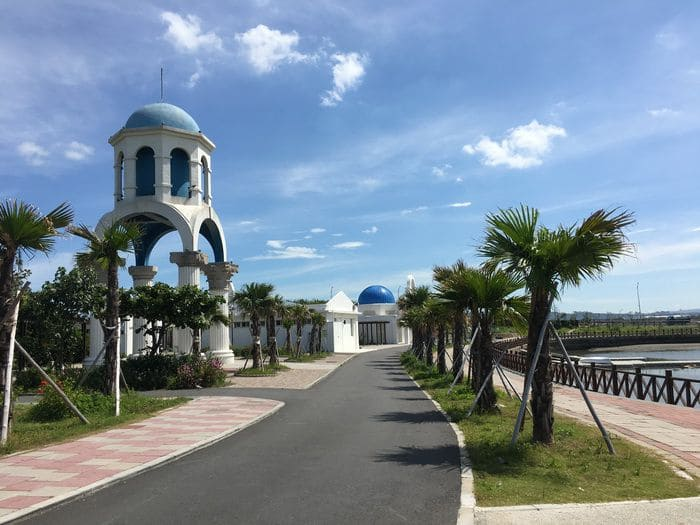

Hi! I am Yi-Lin Chiang, or you can just call my English name, Elynn. I’m currently a sophomore in NTHU, Taiwan, majoring in FLL and growing interest in learning German language.
Hsinchu City is my hometown, and to be exactly, Nanliao is the place where I’ve been lived for years.